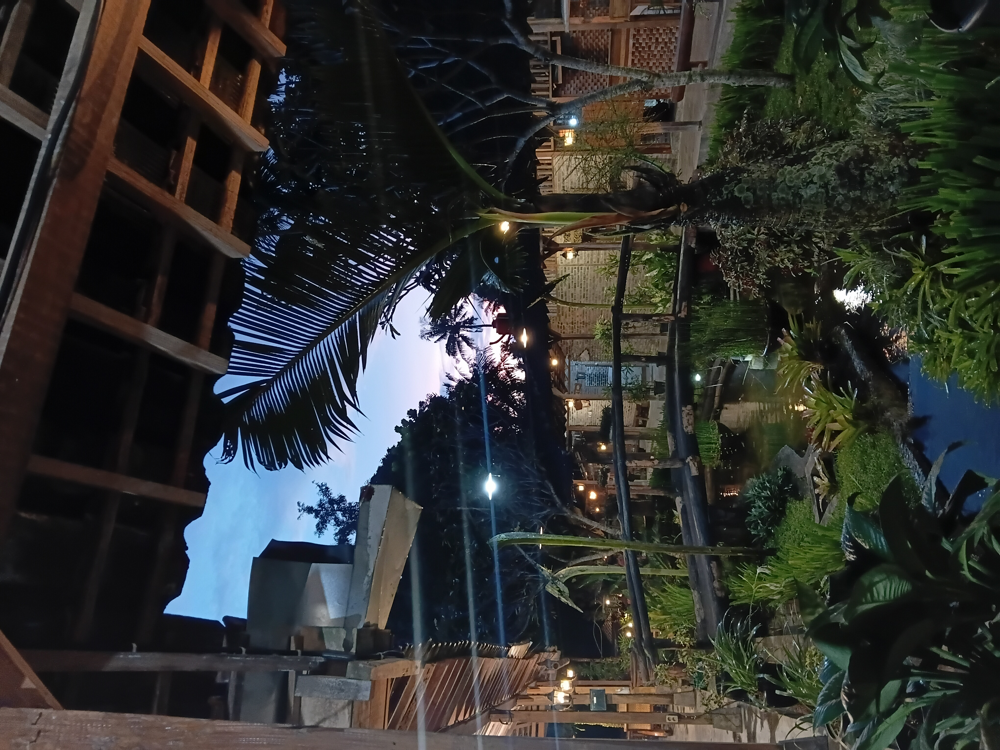

Sabtu pagi, pukul 6 lebih, aku baru terbangun dari tidur. Bergegas menyetrika pakaian dan sarapan pagi. Kurang dari satu jam kemudian aku lanjut mandi dan berangkat kerja menggunakan motor pukul 7.33. Mengajar dua kelas 12 di sesi awal. Mereka yang akan melakukan SNBT tanggal 21 April mendatang. Seperti biasa, semangat mereka tetap menggebu-gebu. Sulitnya soal PM yang aku ajarkan hari ini tidak mereka rasakan. Tidak seperti waktu awal-awal persiapan SNBT. Sekarang mereka tidak mengenal rasa sakit karena sulitnya soal ini. Yang mereka rasakan hanyalah penasaran bagaimana cara mengerjakan soal ini. Antusiasme dan semangat mereka membuatku semakin enjoy dalam bekerja.
Dua sesi memang terasa singkat. Aku mengakhiri pekerjaan hari ini tepat di pertengahan hari. Setelah makan siang dan sholat, aku beranjak keluar dari tempat kerja dan menuju ke kos QQ. Kami akan berdiskusi terkait persiapan pernikahan kami. Di tempat itu, Waroeng Nyamleng Jogja, menjadi saksi kerja keras kami.

Dihiasi dengan live Music yang membuat tempat itu ramai dan penuh dengan warna-warna yang indah. Kami beradu ide, saran, masukan, dan pendapat hanya untuk mencapai kesepakatan yang mufakat. Hingga kami menghabiskan sekitar seperampat hari di sana. Tidak akan selama itu jika tempat nya tidak nyaman bukan (?). Jelas, pertemuan ini akan kembali kami lakukan di waktu yang tepat. Entah di tempat yang sama atau di tempat lain yang lebih baik. Mencari suasana baru untuk mendapatkan energi yang baru.